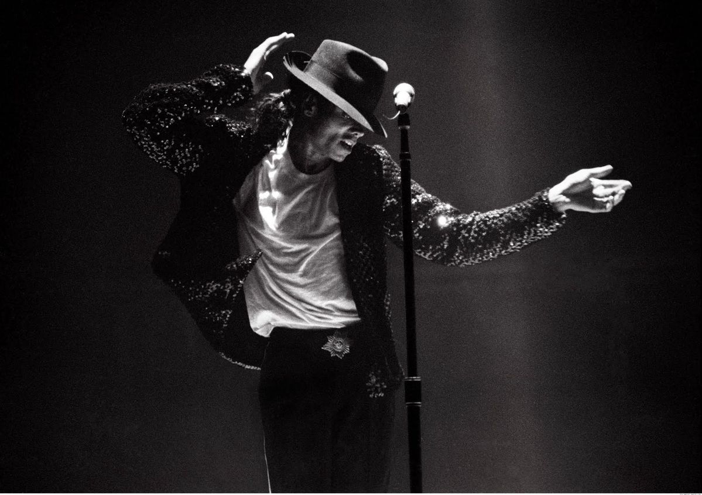

🌟 As Raízes de um Ícone-A Infância
Michael Joseph Jackson nasceu em 29 de agosto de 1958, em Gary, Indiana, nos Estados Unidos. Desde pequeno, demonstrou um talento extraordinário para cantar e dançar. Ainda criança, passou a se apresentar ao lado de seus irmãos no grupo Jackson 5, liderado por ele e que rapidamente ganhou destaque no cenário musical.
🎶 Os Primeiros Passos para a Fama — O Jackson 5
No final dos anos 1960, o Jackson 5 assinou contrato com a gravadora Motown Records. O grupo alcançou grande sucesso com músicas como I Want You Back, ABC e I'll Be There. Michael, apesar de muito jovem, tornou-se o principal destaque do grupo por sua voz, carisma e habilidade para dançar.

⭐ O Talento que Queria Voar Sozinho — A Carreira Solo
Enquanto ainda fazia parte do Jackson 5, Michael começou a desenvolver sua carreira individual. Em 1979, lançou o álbum Off the Wall, que foi um enorme sucesso e mostrou que ele poderia se destacar também fora do grupo. O álbum trouxe músicas como Don't Stop 'Til You Get Enough e Rock with You.

👑 O Nascimento do Rei do Pop — Thriller
Em 1982, Michael lançou Thriller, álbum que transformou sua carreira e o colocou definitivamente entre os maiores artistas da história. O disco trouxe sucessos como Billie Jean, Beat It e Thriller. Seu videoclipe de Thriller também revolucionou a indústria ao transformar o videoclipe em uma verdadeira produção cinematográfica.

🕺 O Passo que Entrou para a História — O Moonwalk
Em 1983, durante uma apresentação especial de 25 anos da Motown, Michael realizou o famoso Moonwalk pela primeira vez em uma apresentação televisionada. O movimento se tornou uma de suas marcas registradas e ajudou a consolidar sua imagem como um dos maiores dançarinos da música.

🎬 Mais do que Música — A Revolução dos Videoclipes
Michael Jackson ajudou a transformar os videoclipes em grandes produções artísticas. Seus vídeos passaram a contar histórias, utilizar coreografias elaboradas e efeitos especiais, influenciando profundamente a indústria musical. Essa combinação de música, dança e cinema se tornou uma das principais características de sua carreira.

⚡ O Rei Continua no Topo — Os Anos 80
Após o sucesso de Thriller, Michael lançou Bad, em 1987. O álbum produziu vários sucessos, como Bad, Smooth Criminal, Man in the Mirror e The Way You Make Me Feel. Nesse período, ele também realizou grandes shows internacionais e consolidou sua fama mundial.

🎤 A Era de Ouro de Michael Jackson — Os Anos 90
Durante os anos 1990, Michael continuou lançando trabalhos de grande sucesso, como Dangerous (1991) e HIStory (1995). Ele continuou realizando grandes apresentações e produzindo videoclipes inovadores. Ao mesmo tempo, sua vida pessoal passou a receber cada vez mais atenção da imprensa.

❤️ O Homem por Trás da Lenda — Vida Pessoal
Michael teve três filhos: Prince Michael Jackson, Paris Jackson e Prince Michael Jackson II, conhecido como Bigi. Sua vida pessoal foi constantemente acompanhada pela mídia, principalmente por causa de sua fama mundial e das diversas polêmicas e acusações que enfrentou ao longo dos anos.
🕊️ O Fim de uma Era — Falecimento
Michael Jackson morreu em 25 de junho de 2009, aos 50 anos, após sofrer uma parada cardíaca provocada por uma intoxicação por medicamentos, incluindo propofol. Naquele momento, ele estava se preparando para a série de shows This Is It, que marcaria seu retorno aos palcos.